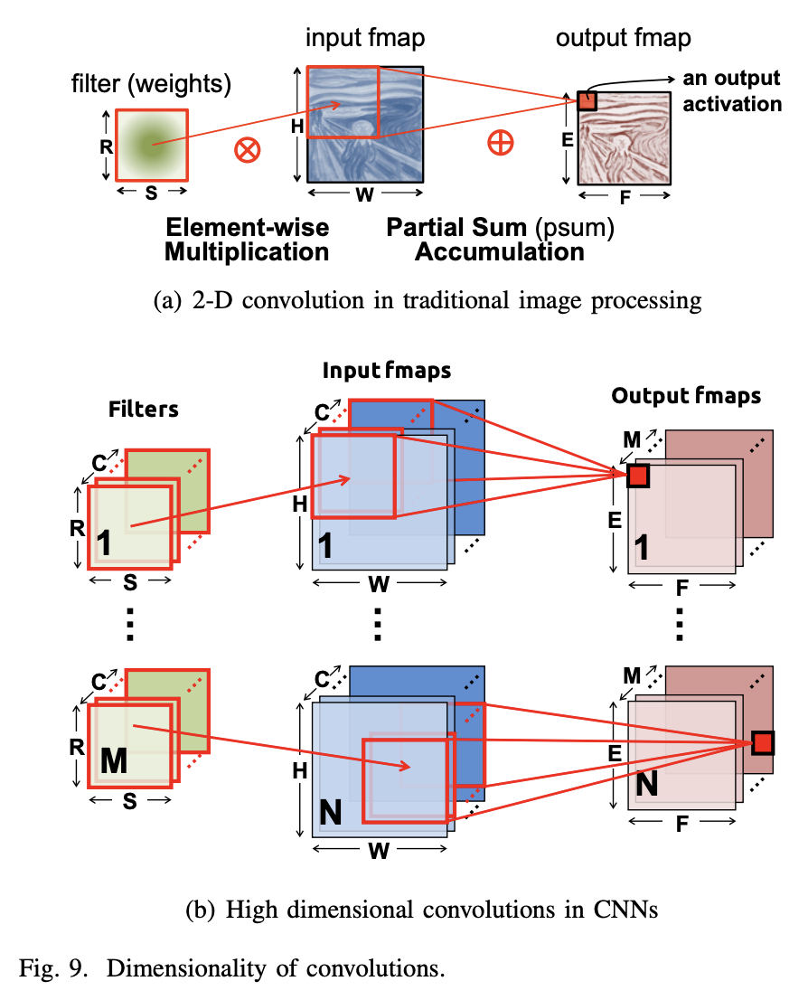
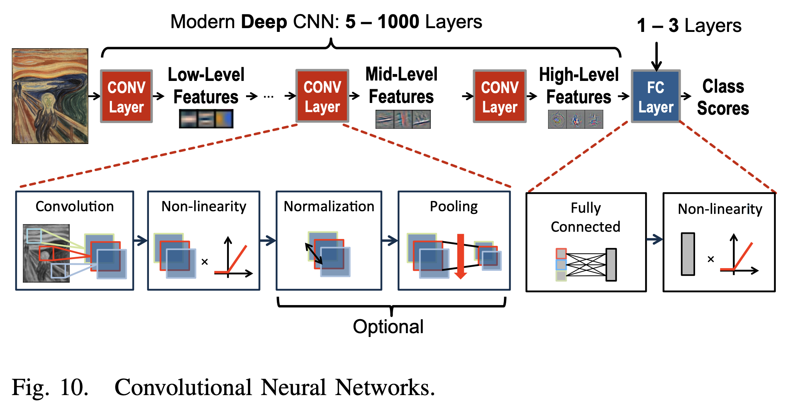
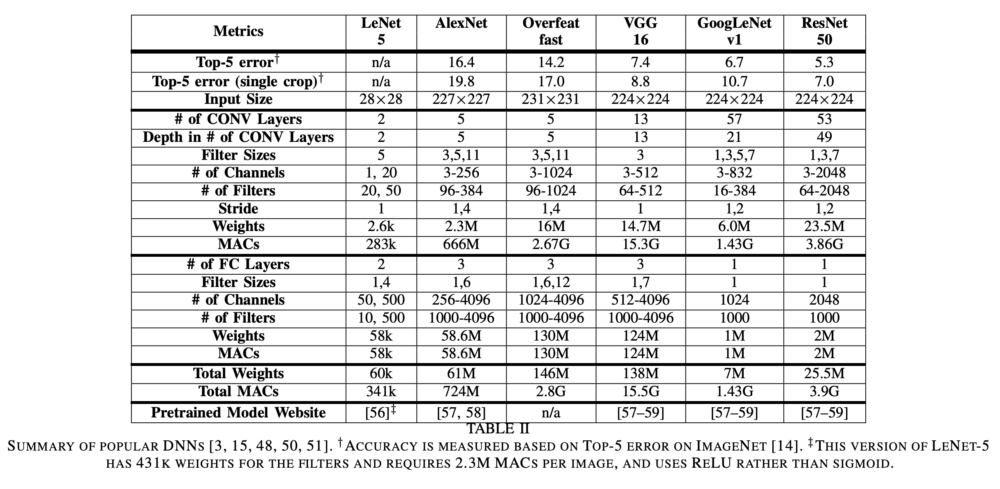

[Paper] Efficient Processing of Deep Neural Networks: A Tutorial and Survey (Part 1)
1. Introduction
최근 이직을 하였고 새로 진행하고 있는 업무는 기존의 AI 알고리즘들을 NPU라는 저전력 하드웨어에 올려서 돌리는 것이다. 이에 따라 NPU에 대한 이해가 필요하게 되었고, 이에 대한 내용을 정리하고자 한다. 이 논문은 NPU에 대한 전반적인 내용을 다루고 있다. 이 논문을 통해 DNN을 지원하는 다양한 하드웨어 플랫폼 및 아키텍처에 대해 이해할 수 있고, DNN의 계산 비용을 줄이기 위한 주요 테크닉들을 다루고 있다. 또한, 다양한 DNN 하드웨어를 평가하는 방법을 통해 해당 하드웨어의 효율성, 유용성을 평가하는 방법 또한 다루고 있다. 가급적 논문의 구성과 내용을 그대로 따라가면서 정리하였다. NPU 관련 내용을 중심으로 정리하고자 하였고 주변 배경 지식들은 거칠게 다루거나 생략하면서 정리하였다.
이 논문은 아래와 같이 구성되어 있다.
- 제2절: DNN이 왜 중요한지, 역사와 응용 분야에 대한 배경지식
- 제3절: DNN의 기본 구성 요소 및 현재 널리 사용되는 DNN 모델 개요
- 제4절: DNN 연구 및 개발에 사용되는 다양한 하드웨어 플랫폼과 아키텍처
- 제5절: DNN을 처리하는 데 사용되는 처리량과 에너지 효율성을 개선하기 위해 사용되는 다양한 최적화 기술
- 제6절: DNN에서 많은 에너지와 시간을 소요하게 하는 데이터 이동을 mixed-signal circuits, 새로운 메모리 기술을 통해 개선하는 방법
- 제7절: DNN에 대한 알고리즘 및 하드웨어 최적화를 함께 수행하여 처리량과 에너지 효율성을 모두 개선하면서 정확도에 미치는 영향을 최소화하는 방법
- 제8절: DNN 디자인을 비교할 때 고려해야 할 주요 지표
2. Background on Deep Neural Networks
A. Artificial Intelligence and DNNs
1950년대의 기계학습부터, 현재의 AI가 발전하는데 영감을 준 뇌의 작동 방식에 대한 설명을 다룬다. 일반적인 내용이라 본 글에서는 대부분의 내용은 생략한다. 현재 널리 연구되고 사용되고 있는 지금의 Neural Network 보다 더 뇌의 작동방식과 유사한 spiking computing 방식에 대한 내용도 다루고 있다. 이에 대한 내용은 생략한다.
B. Neural Networks and Deep Neural Networks (DNNs)
신경망(neural networks)은 뉴런의 계산이 입력 값들의 가중합에 의해 이루어진다는 개념에서 영감을 받았으며, 가중합은 시냅스에서 수행되는 값 스케일링과 뉴런에서 이러한 값을 결합하는 것에 해당한다. 즉 뇌에서 어떻게 신호가 전달되는지, 그리고 그 과정에서 신호에 어떤 처리가 진행되는지에 영감을 받아서 Neural Networks가 탄생하게 되었다. 그리고 뉴런은 비선형적이고 또 복잡하게 얽혀있는 함수들로 인해 다양한 입력들을 처리하게 되는데 이러한 연산들로 우리가 널리 사용하는 DNN이 탄생하게 된 것이다. 이러한 신경망의 계층이 많아질수록 더욱 복잡한 문제를 계층적으로 해결할 수 있게 되는데 이를 Deep Neural Networks라고 한다.
C. Inference versus Training
DNNs은 “training” 이라는 학습 과정을 통해 얻어진 weights를 바탕으로 “inference"를 통해 요구로하는 task를 수행한다. 이러한 training과정은 backpropagation이라는 알고리즘을 통해 수행되며, fine-tuning이라는 과정을 통해 다양한 어플리케이션으로 기능이 확장되기도 한다. 본 논문에서는 이미지 처리를 위한 학습과정을 좀 더 자세히 다루지만 본 글에서는 생략한다. 그리고 뒤에 이어지는 DNN Accelerator에서는 inference 과정에 대해서만 다루게 된다.
D. Development History
- 1940s - Neural networks were proposed
- 1960s - Deep neural networks were proposed
- 1989 - Neural networks for recognizing digits (LeNet)
- 1990s - Hardware for shallow neural nets (Intel ETANN)
- 2011 - Breakthrough DNN-based speech recognition (Microsoft)
- 2012 - DNNs for vision start supplanting hand-crafted approaches (AlexNet)
- 2014+ - Rise of DNN accelerator research (Neuflow, DianNao…)
E. Applications of DNNs
- Image & Video Recognition
- Speech & Natural Language Processing
- Medical Diagnosis
- Game Playing
- Robotics
F. Embedded vs Cloud
딥러닝은 현재 많은 분야에서 활용되고 있으며, 최근에는 컴퓨터 비전, 음성 인식, 자율 주행 등에도 사용되고 있다. 다양한 분야에서 딥러닝 모델의 연산이 필요하며, 필연적으로 이를 클라우드에서 처리하거나, 혹은 사물 인터넷이나 모바일 기기에서 처리하게 된다. 또한 일부 분야에서는 센서에서 바로 처리해야 하는 경우도 있으며 이러한 경우에는 저전력 하드웨어를 사용하여 inference를 처리해야 한다. 특히나 이러한 저전력 하드웨어에서는 성능과 비용에 대한 제약사항이 크다. 최근 DNNs 모델의 크기가 커지고 어플리케이션이 다양해지면서 클라우드에서도 처리되는 inference 역시 많은 연산량을 필요로 하며, 이에따라 저전력 고효율 하드웨어의 필요성이 커지고 있다. 본 논문에서 다루는 DNN accelerator는 이러한 문제를 해결할 수 있는 저전력 고효율 하드웨어이다.
3. Overview of DNNs
DNNs는 용도에 따라 다양한 모양과 크기를 가지며, 정확도와 효율성을 개선하며 활발히 연구되고 있다. 모든 이러한 DNNs의 입력은 이미지의 픽셀, 오디오 웨이브의 샘플 진폭 또는 어떤 시스템이나 게임의 숫자 형태로 입력된다. 입력된 정보들은 크게 두가지 종류의 네트워크를 통해 처리된다. 첫번째 피드 포워드 네트워크에서는 이전 레이어의 출력을 연산의 일련의 순서로 수행하여 네트워크의 출력을 생성한다. 예를 들어, 네트워크는 이미지에 특정한 물체가 포함되어 있는 확률이나 입력에 따라 취해야 할 제안된 동작을 출력한다. 이러한 DNN에서는 네트워크가 기억하지 않으며 입력에 대한 출력은 네트워크에 이전에 제공된 입력의 순서에 관계없이 항상 동일하다. 이와 반대로 Recurrent Neural Networks (RNNs)은 입력들이 중간 상태로 네트워크에 기억되며 결과에 영향을 미친다.
본 논문에서는 주로 DNNs에 대해서 다루며, 그 중에서 Convolutional Neural Networks (CNNs)를 주로 다룬다. CNNs의 경우 공유되는 weight 를 가진 filter를 모든 입력에 동일하게 수행한다. 즉 동일한 filter window를 특정 규칙 (stride, padding 등) 에 따라 모든 입력에 동일하게 연산을 수행한다. 이러한 구조를 통해 효율적으로 저장공간을 사용고 연산을 병렬적으로 처리할 수 있게 한다. 최근에는 attention mechanism이나 graph neural network 등도 가속화 하기 위한 많은 연구 및 기술 개발이 진행되고 있지만, 본 논문에서는 CNNs에 대해서만 다룬다.
A. Convolutional Neural Networks
 
DNN(딥러닝)의 일반적인 형태는 합성곱 신경망(CNN)으로, 다수의 CONV 레이어로 구성된다.(그림 10 참조). 이러한 네트워크에서 각 레이어는 입력 데이터의 점차 더 높은 수준의 추상화를 생성하는데, 이를 특징 맵(feature map 또는 fmap)이라고 한다. 이러한 CNN은 깊은 계층을 통해 다양한 task를 효과적으로 처리하며 다양한 분야에서 기존 알고리즘보다 우수한 성능을 보여주고 있다. 본 논문에서는 이미지 처리 분야에서의 이미지 분류 작업을 위한 CNN의 사용에 초점을 맞춘다.
CNN의 각 CONV 레이어는 주로 고차원 컨볼루션으로 구성되며, 이는 그림 9(b)를 통해 어떻게 처리되는지 확인할 수 있다. 컨볼루션 연산에서는 학습을 통해 저장된 weights를 갖고 있는 filter가 입력 이미지 또는 특징맵에 컨볼루션으로 적용된다. 따라서 이러한 filter 컨볼루션 연산은 여러 입력 특징 맵 상에서 동시에 병렬적으로 처리될 수 있으며, 가중치에 대한 저장공간 효율또한 상당히 높다.
Fully Connected (FC) Layer는 CNN의 마지막 레이어로, 이는 주로 CNNs 을 통해 생성된 특징맵을 통해 여러가지 task를 수행하는 역할을 한다. CNN과는 달리 weight 공유가 없이 모두 연결되 구조이기 때문에 CNN과 같이 효과적이 연산이 어렵다. 그 외에도 다양한 Non-linear Activation function들과 Max Pooling, Batch Normalization 등의 기법들이 함께 사용된다.
B. Popular DNN Models
DNN 모델은 레이어 수, 레이어 유형, 레이어 모양(필터 크기, 채널 수 및 필터 수), 레이어 간 연결 등에서 다양한 ‘네트워크 아키텍처’를 가지고 있다. 본 섹션에서는 LeNet을 비롯한 다양한 모델들의 개요를 설명한다. 대부분 사전 훈련된 가중치를 가진 이러한 모델은 공개적으로 다운로드할 수 있다.

위 테이블을 보면 각 모델들의 성능을 비롯한 weights의 수, MAC(matrix multiply-accumulate) 연산의 수 등을 확인할 수 있다. 이러한 weights와 MAC 연산의 수는 DNN accelerator로 수행하였을때 얼마나 많은 에너지가 사용되고 얼마나 많은 시간이 소요되는지를 결정하는 중요한 요소이다.
-
LeNet LeNet은 1989년에 소개된 첫번째 CNN 방식 중 하나로, 28x28 크기의 회색조 이미지에서 숫자 인식을 위해 설계되었다. LeNet-5는 2개의 CONV 레이어와 2개의 FC 레이어를 포함하며, 각각 6개 및 16개의 필터를 사용한다. 각 컨볼루션 후 2x2 평균 풀링을 사용하고, 활성화 함수로 시그모이드 함수를 사용했다. 이 모델은 60k weights와 341k MACs를 필요로 하며, 디지털 수표 인식을 위해 ATM에 적용되어 CNN의 첫 상용화를 이루었다.
-
AlexNet 2012년 이미지넷 챌린지에서 우승한 최초의 CNN 모델인 AlexNet은 5개의 CONV 레이어와 3개의 FC 레이어로 이루어져 있다. 필터 크기는 3x3에서 11x11로, 96에서 384개의 필터가 사용되며, 각 채널은 3에서 256개의 채널로 확장되었다. AlexNet은 LeNet과 달리 레이어마다 가중치 수와 크기가 다른 특징이 있다. 총 61M의 weights 724M의 MACs가 필요로 한다.
-
Overfeat Overfeat는 AlexNet과 유사한 구조를 가지고 있지만, 필터의 개수가 더 늘어나고 입력 크기가 다르며, 첫 번째 fully connected layer에서의 채널 수도 AlexNet보다 적다. 따라서 Overfeat는 이미지 하나를 처리하는 데 146M의 weights 2.8G의 MACs 연산을 요구한다.
-
VGG-16 VGG-16은 더 깊은 16개의 레이어로 구성되어 있으며, 모든 CONV 레이어가 3x3 필터를 사용하도록 설계되어 있다. 이로 인해 VGG-16은 이미지 하나를 처리하는 데 138M의 weights, 15.5G의 MACs 연산을 요구한다.
-
GoogLeNet GoogLeNet는 22개의 레이어로 이루어진 심층 신경망으로, 인셉션 모듈을 도입하여 병렬 연결을 사용하고 다양한 필터 크기를 사용하여 입력을 다중 스케일로 처리한다. 또한 1x1 필터를 사용하여 가중치 수를 줄이고 Inception-v3와 Inception-v4로 업그레이드하여 성능을 향샹시켰다.
-
ResNet ResNet은 Residual Net의 약자로, residual connections을 사용하여 더 깊은 네트워크(34개 이상의 레이어)를 만들었다. 이 방법은 역전파시 그래디언트 소실 문제를 해결하는데, 이전 레이어의 가중치를 건너뛸 수 있는 shortcut module을 사용한다. ResNet은 또한 1x1 필터를 사용하여 가중치 수를 줄이는 bottleneck 방식을 채택하였다. ResNet-50은 25.5M weights와 3.9G MACs가 필요하며, ResNet-152는 11.3G MACs와 60M weights가 필요하지만, ResNet-50보다 top-5 오류율을 약 1% 줄일 수 있다.
신경망의 깊이를 증가시키면 더 높은 정확도를 제공하는 경향이 있다. 가중치 수를 제어할 때 더 깊은 네트워크는 더 구별적인 비선형 함수를 지원하고 학습된 표현에서 더 많은 수준의 계층을 제공한다. 대부분의 연산은 FC 레이어가 아닌 CONV 레이어에서 이루어지며 FC 레이어의 가중치 수도 줄어들고 최근의 대부분의 네트워크(특히 GoogLeNet 이후)에서 CONV 레이어가 가중치에서 우위를 점하고 있다. 따라서 DNN Accelerator 하드웨어 구현의 초점은 CONV 레이어의 효율성에 대한 문제를 해결하는 것이 필요하다.
4. DNN Development Resources
DNNs의 발전을 촉진하는 핵심 요소 중 하나는 연구 커뮤니티와 산업이 제공한 개발 리소스이다. 이들 리소스는 모델 복잡성과 정확성에 대한 트레이드 오프를 탐색하고 워크로드를 특성화하여 DNN 가속기의 개발을 용이하게 한다. 이 섹션은 이러한 리소스를 설명하여 이 분야에 관심 있는 사람들이 빠르게 시작할 수 있도록 한다.
A. Frameworks
DNN 개발을 위해 여러 딥러닝 프레임워크가 개발되어 있으며, Caffe, TensorFlow, Torch, Theano, MXNet, CNTK 등이 있다. 이러한 프레임워크를 사용하면 보다 쉽게 DNN 모델을 개발하고 학습된 네트워크를 공유할 수 있다. 이러한 프레임워크 위에 Keras와 같은 라이브러리를 사용하여 빠르고 간편하게 개발할 수 있다.
DNN 개발과 응용 디자이너들을 위한 프레임워크는 더 효율적인 DNN 계산 엔진을 설계하는 데 매우 중요하다. 이러한 프레임워크는 최적화된 소프트웨어 또는 하드웨어 가속기를 사용하여 처리할 수 있는 기본 연산들을 사용한다. 또한 이러한 프레임워크는 하드웨어 연구에 있어서도 HW/SW 최적화 간의 trade-off를 고려하며 워크로드를 분석하는 중요한 역할을 한다.
B. Models
사전 학습된 DNN 모델은 다양한 웹사이트 [56-59]에서 다양한 프레임워크를 위해 다운로드할 수 있다. 그러나, 같은 DNN (예: AlexNet)일지라도 모델이 어떻게 학습되었는지에 따라 정확도가 약 1%~2% 정도 차이가 나기 때문에 결과는 원래의 출판물과 완전히 일치하지 않을 수 있다는 것에 주의해야 한다.
C. Popular Datasets for Classification
DNN 모델을 비교할 때, 작업의 난이도를 고려하는 것이 중요하다. 예를 들어, MNIST 데이터셋으로 손글씨 숫자를 분류하는 것은 ImageNet 데이터셋에서 1000가지 클래스 중 하나를 분류하는 것보다 훨씬 간단하다. 따라서, 더 어려운 작업일수록 DNN의 크기(가중치 수)와 MACs 수가 더 크며, 더 많은 에너지를 필요로 하며, 처리량이 낮아진다. 또한, 다양한 공개 데이터셋을 활용하여 DNN 모델의 정확도를 평가하는 것이 중요하며, 이미지 분류가 가장 일반적이고 간단한 작업이다.
MNIST는 손글씨 숫자 분류를 위해 1998년에 소개된 28x28 픽셀 회색조 이미지 10개 클래스의 데이터셋이다. LeNet-5는 MNIST를 위해 디자인된 DNN 모델 중 하나이다. CIFAR-10은 다양한 물체의 32x32 픽셀 컬러 이미지로 이루어진 데이터셋으로, 10개 클래스와 각각 5,000개의 학습 이미지와 1,000개의 테스트 이미지가 있다. ImageNet은 1,000개 클래스의 256x256 컬러 이미지 데이터셋으로, 다양한 물체 및 동물 종에 대한 세부 범주를 포함한다. MNIST는 쉬운 데이터셋이고, ImageNet은 어려운 데이터셋이며, DNN 모델의 정확도를 평가할 때 데이터셋을 고려하는 것이 중요하다.
D. Datasets for Other Tasks
DNN의 정확도가 인간 수준을 뛰어넘는 이미지 분류 작업에서는, ImageNet Challenge가 단일 객체 지역화 및 객체 감지와 같은 더 어려운 작업에 집중하기 시작했다. PASCAL VOC, MS COCO, Open Images dataset 및 YouTube dataset과 같은 다른 인기있는 이미지 데이터셋도 존재한다. 또한, Google이 발표한 632개 오디오 이벤트 클래스로 구성된 오디오 데이터셋과 200만개의 10초 길이 사운드 클립이 포함된 인간-라벨 데이터셋도 있다. 이러한 대규모 데이터셋은 미래 DNN 엔진의 효율성을 프로파일링하고 탐색하는 데 중요한 자원으로 작용할 것이다.